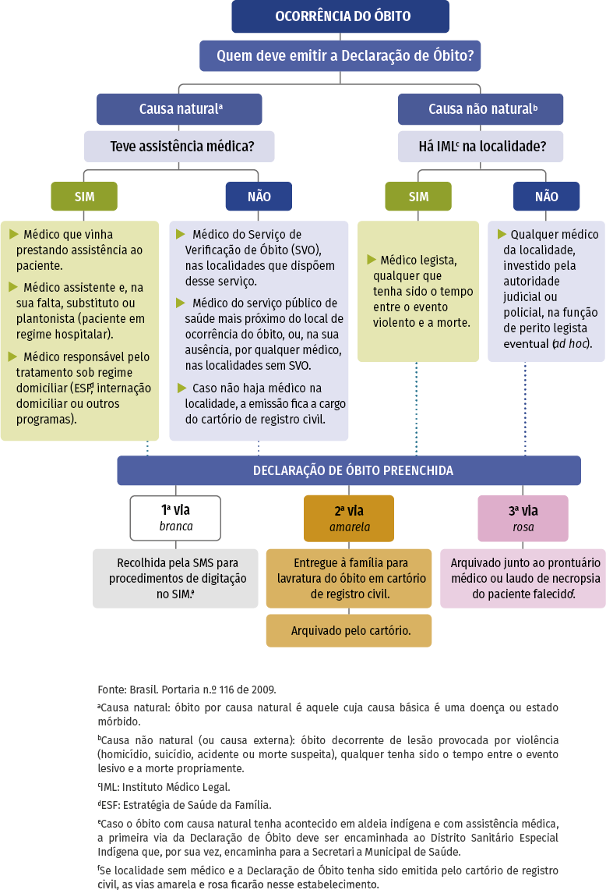

Módulo 3 | Aula 1
Introdução aos Sistemas de Informação em Saúde e Sistemas de Informações de Estatísticas Vitais
Sistema de Informações sobre Mortalidade (SIM)
O Sistema de Informação sobre Mortalidade (SIM), criado pelo Ministério da Saúde em 1975, surgiu para unificar e padronizar os mais de 40 modelos diferentes de Declaração de Óbito expedidos no Brasil. Até então, os dados sobre mortalidade eram fragmentados, não padronizados e sem um fluxo organizado desde a coleta até a divulgação das estatísticas vitais. Esse cenário dificultava a construção de uma vigilância epidemiológica eficiente.
O SIM tem como objetivo coletar, processar, armazenar e divulgar informações sobre todos os óbitos ocorridos no território nacional, incluindo suas causas e características, abrangendo também os óbitos fetais. Com o passar das décadas, o sistema se tornou mais completo e confiável, alcançando alta cobertura em todo o território nacional. Essa evolução permite analisar de forma consistente o perfil de mortalidade da população brasileira em diferentes regiões e recortes.
Coleta dos dados sobre mortalidade
O instrumento utilizado para coleta de dados do SIM é a Declaração de Óbitos (DO). Além de ser o documento padrão de coleta de dados do SIM, a DO, conforme determina a Lei dos Registros Públicos — Lei nº 6.015, de 31 de dezembro de 1973 —, também tem caráter jurídico, por ser o documento oficial para a lavratura da Certidão de Óbito pelos Cartórios de Registro Civil.
A DO é impressa com sequência numérica única, formando conjuntos de três vias (branca, amarela e rosa); sua produção e distribuição é de competência exclusiva da Secretaria de Vigilância em Saúde e Ambiente do Ministério da Saúde (SVS/MS), que as repassa para as Secretarias Municipais de Saúde (SMS) e aos Distritos Sanitários Especiais Indígenas (Dsei), que por sua vez as distribuem às unidades notificadoras: estabelecimentos e serviços de saúde, inclusive domiciliar, Serviços de Institutos Médico-Legais cadastrados pela SMS. O cartório de registro civil é considerado a unidade notificadora em localidades sem médicos.
O preenchimento da DO, de acordo com a legislação brasileira, é um ato médico, porque somente esse profissional pode emitir uma DO, salvo em situações específicas fixadas por lei.
Quando a morte acontece por causa natural e a pessoa tinha acompanhamento médico, a Declaração de Óbito (DO) deve ser feita pelo médico responsável. Se a causa for natural, mas sem assistência médica, a DO será feita pelo médico do Serviço de Verificação de Óbitos (SVO). Se não houver esse serviço na cidade, a DO deverá ser emitida por um médico indicado pela Secretaria Municipal de Saúde (SMS). Em casos de morte por violência ou acidente, a DO é feita pelo perito do Instituto Médico-Legal (IML); se não houver, por um perito indicado pela autoridade judicial ou policial.
Em situações especiais, como buscas ativas, quando não for possível emitir a DO oficial, é usada a DO epidemiológica. Nesse caso, quem a preenche é o responsável pelo Sistema de Informação sobre Mortalidade (SIM) na Secretaria de Saúde.
A DO é formada por 59 variáveis, distribuídas em nove blocos, que identificam e caracterizam as circunstâncias do óbito, conforme o Quadro 1.
Quadro 1 – Variáveis segundo o bloco da declaração de óbito
| Bloco I – Identificação do falecido | Tipo de óbito (fetal ou não); data do óbito; cartão SUS; naturalidade; nome do falecido; nome do pai; nome da mãe; data de nascimento; idade; sexo; raça/cor; situação conjugal; escolaridade; ocupação habitual. |
|---|---|
| Bloco II – Residência | Logradouro; CEP; bairro/distrito; município de residência; UF. |
| Bloco III – Ocorrência | Local de ocorrência do óbito; estabelecimento; endereço de ocorrência; CEP; bairro/distrito; município de ocorrência; UF. |
| Bloco IV – Óbitos fetais ou de menores de 1 ano | Informações sobre a mãe (idade; escolaridade; ocupação habitual; número de filhos tidos; número de semanas de gestação; tipo de gravidez; tipo de parto; morte em relação ao parto). Informações sobre o bebê (peso ao nascer, número da Declaração de Nascido Vivo). |
| Bloco V – Condições e causas de óbito | Se mulher em idade fértil, quando ocorreu o óbito (gravidez, parto, abortamento, puerpério, pós-puerpério até um ano após a gestação ou não ocorreu nesses períodos); se recebeu assistência médica; realização de necropsia; causas da morte; atestado médico de óbito (padronizado internacionalmente). |
| Bloco VI – Médico atestante | Nome do médico; CRM; óbito atestado por: assistente, substituto, IML, SVO, outro; município e UF do SVO ou IML; meio de contato; data do atestado; assinatura. |
| Bloco VII – Causas externas | Prováveis circunstâncias de morte não natural, tipo de causa externa; acidente de trabalho; fonte de informação; descrição sumária do evento; endereço do local do acidente ou violência. |
| Bloco VIII – Cartório | Nome do cartório; registro; data; município; UF. |
| Bloco IX – Localidade sem médico | Nome do declarante; testemunhas do óbito. |
Fonte: Brasil (2022a).
Processamento dos dados sobre mortalidade
Depois de preencher a Declaração de Óbito, o encaminhamento depende da causa da morte (natural ou externa) e do local onde ocorreu (hospital, outro serviço de saúde, via pública, domicílio ou outro), conforme o esquema apresentado na Figura 1.
As três vias da DO têm destinos diferentes:
Via branca: vai para a Secretaria Municipal de Saúde (SMS) para registro no Sistema de Informação sobre Mortalidade (SIM).
Via amarela: é entregue à família ou responsável legal para lavratura da certidão de óbito no cartório.
Via rosa: fica arquivada no prontuário ou no setor de necropsia, quando emitida em hospital, SVO ou IML. Se a morte natural ocorreu fora de um serviço de saúde, a via rosa também fica com a SMS. Em casos de morte por causa externa, a via rosa fica com o perito que emitiu a DO.
Para óbitos naturais em território indígena, a via branca é enviada ao Distrito Sanitário Especial Indígena (DSEI).
Figura 1: Fluxo da emissão da Declaração de Óbito de acordo com a Portaria nº 116 de 2009.

A via Branco, ao chegar às SMS onde ocorreu o óbito, passa por revisão nas Secretarias Municipais de Saúde para corrigir erros ou campos em branco. Após essa revisão inicial a DO é digitalizada pelo técnico treinado no SIM local.
Depois, é feita a análise das causas da morte, definindo-se uma única causa principal, chamada causa básica, ou seja, a doença ou lesão que iniciou os eventos que levaram ao óbito. A codificação é feita por profissionais treinados, chamados codificadores, que aplicam regras para selecionar a causa básica com apoio de ferramentas como o Seletor de Causa Básica.
Alguns óbitos recebem tratamento especial, estabelecido pelo Ministério da Saúde. É obrigatória a investigação de óbitos de mulheres em idade fértil, mortes maternas, fetais e infantis, conforme portarias específicas. Também são investigadas mortes com causa básica mal definida. Essas investigações seguem orientações padronizadas em todo o país, pois são eventos importantes para a Saúde Pública e ajudam a identificar falhas nos serviços de saúde.
Após a digitação da DO pelos municípios, cabe à equipe estadual realizar, por meio do SIM federal, o envio dos dados ao Ministério de Saúde onde as DO serão processadas, tratadas e analisadas para posterior divulgação dos dados consolidados. Todo esse processo demora em torno de dois anos para estruturação e divulgação do banco final do SIM pelo DATASUS.
Principais usos do Sistema de Informação sobre Mortalidade
O SIM é uma ferramenta essencial para a gestão da Saúde Pública no Brasil. A partir dos dados do SIM é possível realizar análises detalhadas sobre padrões de mortalidade e suas características, ajudando a identificar grupos vulneráveis e monitorar tendências epidemiológicas.
Além disso, o SIM é amplamente utilizado para subsidiar políticas públicas e estratégias de prevenção. Por exemplo, os dados do sistema são fundamentais para monitorar a mortalidade infantil, permitindo que gestores identifiquem regiões com maiores taxas e direcionem programas de atenção materno-infantil. Outro uso prático é no controle de epidemias, como a análise do impacto da covid-19 ou da dengue, ajudando a planejar ações emergenciais. Também é utilizado para avaliar causas externas de morte, como acidentes de trânsito e violência, orientando políticas de segurança e prevenção. Dessa forma, o SIM não apenas organiza informações, mas contribui diretamente para a tomada de decisões que salvam vidas.
Podemos destacar alguns indicadores entre os mais utilizados para análise do perfil de mortalidade da população. São eles:
Taxa bruta de mortalidade: número total de óbitos por 1.000 habitantes em determinado período, útil para avaliar o nível geral de mortalidade da população.
Taxas específicas de mortalidade por idade e sexo: permitem identificar causas específicas de mortalidade segundo idade e sexo, fundamentais para políticas direcionadas.
Taxa de mortalidade infantil: óbitos de crianças menores de 1 ano por mil nascidos vivos, indicador-chave da qualidade da atenção materno-infantil.
Taxa de mortalidade materna: número de mortes relacionadas à gestação, parto ou puerpério por 100 mil nascidos vivos, usada para monitorar cuidados obstétricos.
Mortalidade proporcional por grupo de causas: distribuição percentual dos óbitos segundo grandes grupos de causas (doenças crônicas, infecciosas, causas externas), baseada na CID-10.
Indicadores de causas mal definidas: proporção de óbitos com causa básica não especificada, importante para avaliar a qualidade da informação.
A seguir você aprenderá mais sobre o cálculo e a interpretação de indicadores de saúde, inclusive aqueles relativos à mortalidade.